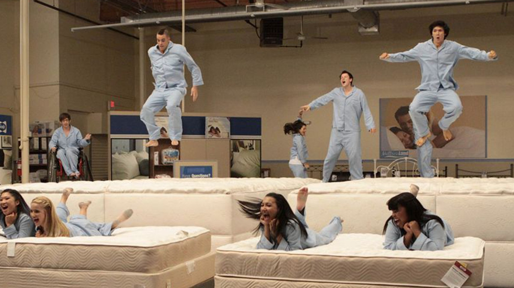

- Тестер матраців — випробовує комфорт ліжок, даючи відгуки про якість відпочинку.
- Тестер відеоігор — грає в ігри перед їх випуском, шукаючи помилки.
- Тестер шоколаду — визначає якість та смак кондитерських виробів.
Фото процесу тестування матраців:
